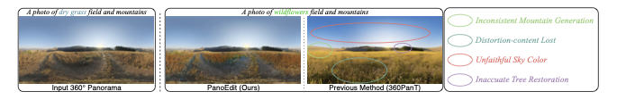
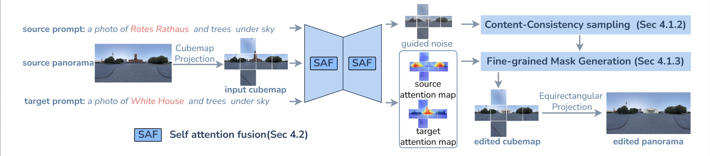
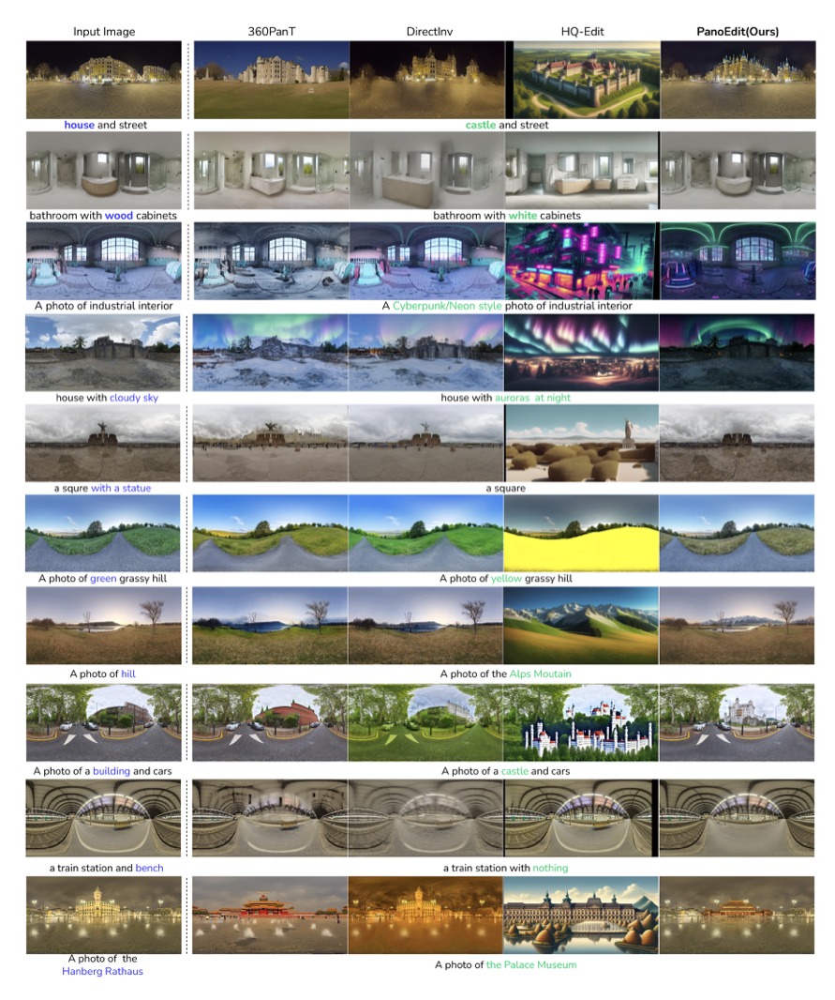
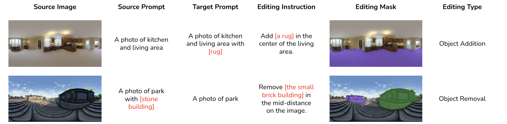

A training-free panorama editing framework that avoids DDIM inversion drift, supports precise local edits, and preserves global 360° coherence.

Content Consistency Sampling
Reformulates panorama editing as image-to-image translation, starting from the source panorama instead of relying on error-prone DDIM inversion.
Fine-grained Local Editing
Adaptive mask generation enables precise edits to target regions while preserving the background and unedited structures.
PoEBench
A benchmark with 928 panoramas across 6 editing categories for evaluating semantic quality, fidelity, and panoramic consistency.
The increasing prominence of 360° panoramas in autonomous driving, robotics and virtual reality applications has heightened the demand for sophisticated panoramic image editing capabilities. However, existing editing approaches struggle with the unique challenges posed by panoramic representations, including geometric distortions and imprecise local content control.
We present PanoEdit, a training-free approach that leverages pre-trained image diffusion models to enable both global and fine-grained panorama editing. Instead of depending on DDIM inversion, which accumulates errors and degrades edit fidelity, PanoEdit reformulates panorama editing as an image-to-image translation process from the source panorama to the edited panorama. The framework further combines adaptive fine-grained mask generation and self-attention fusion to maintain edit precision and global panoramic coherence.
To support systematic evaluation, we introduce PoEBench, a benchmark of 928 high-quality panoramas with detailed annotations spanning 6 editing categories. Experiments show substantial improvements over prior panorama editing methods in structure preservation, consistency, and runtime.
Method

Examples

Benchmark

PoEBench contains 928 panoramas from diverse indoor and outdoor scenes with annotations for prompts, instructions, masks, and edit types, enabling comprehensive evaluation of local edit quality and global consistency.